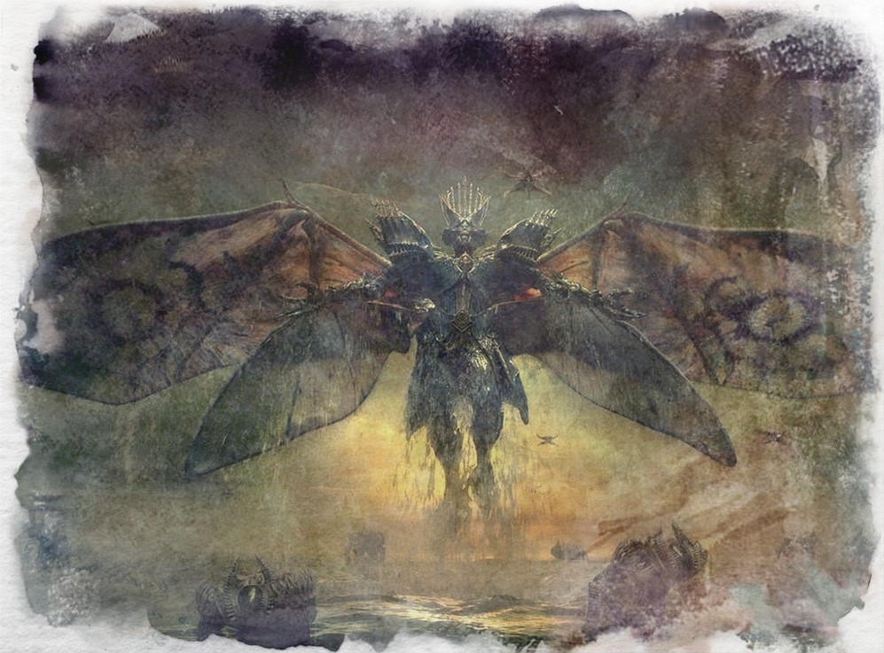

Marduk
In the Imperial Archives of Nabu lie dusty, long-forgotten scrolls that tell the tale of a tribe in the deserts of Urugal that rose up against the Mother of Waters, a monster that sought an end to all. Such was her power that only one could stand against her and give birth to the foreboding Empire of Nibiru in consequence; but such power came at a terrible price.